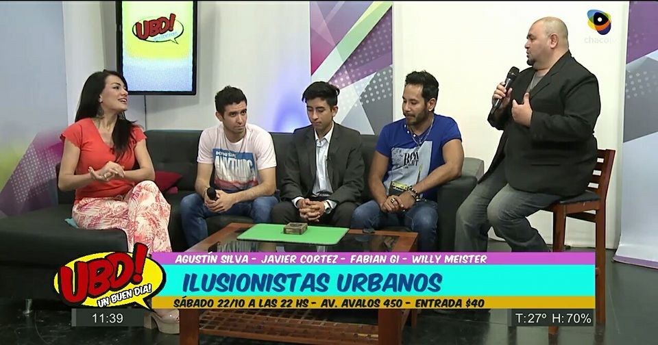
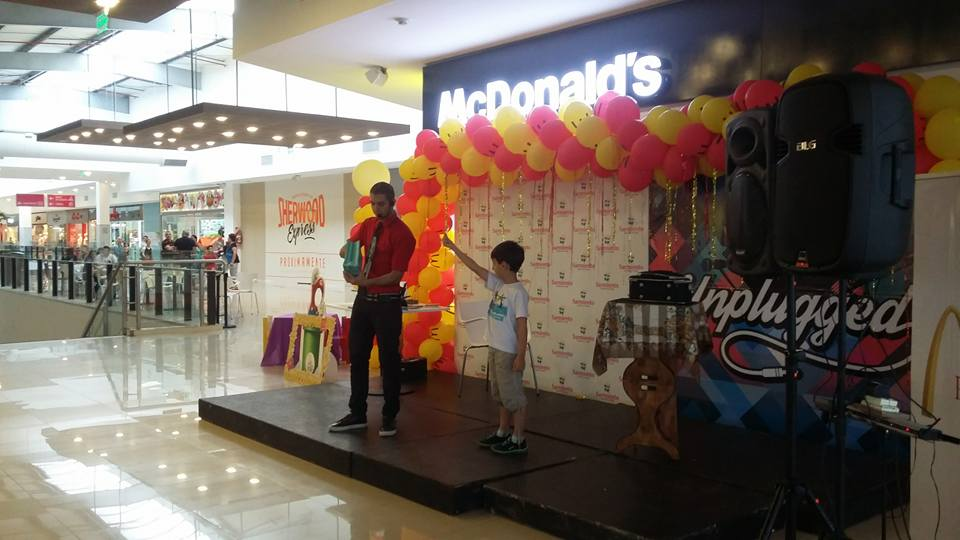
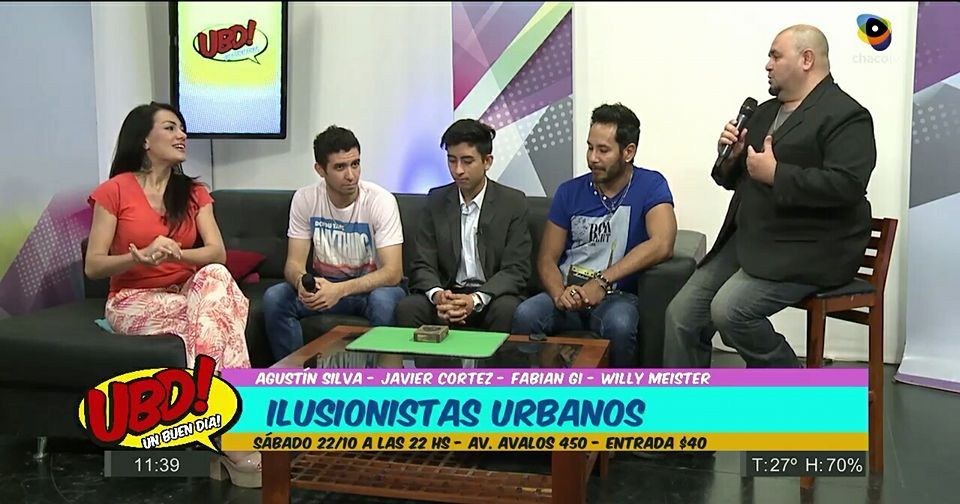
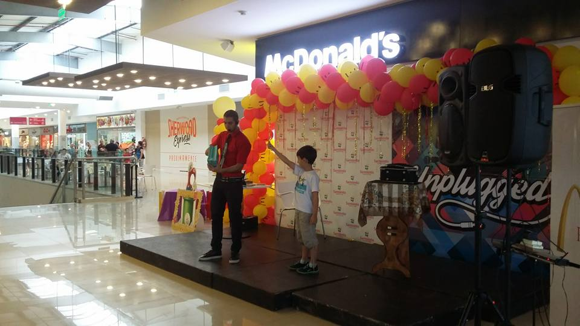

Desde pequeño, Fabián descubrió que la magia no solo está en los trucos, sino en la capacidad de sorprender, emocionar y conectar con las personas. Con los años, transformó esa pasión en un estilo propio: cercano, elegante y siempre cargado de humor.
Su recorrido lo llevó a presentarse en eventos privados, teatros y escenarios donde cada show se convirtió en una experiencia inolvidable. Hoy, Fabián Gi combina creatividad, profesionalismo y un toque único para hacer de cada presentación un recuerdo mágico para toda la vida.